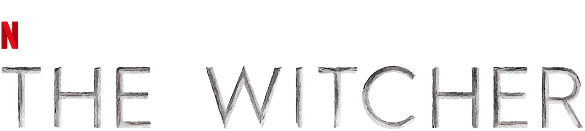
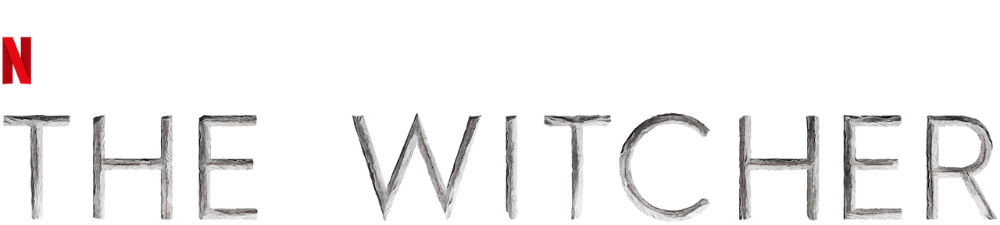

The Witcher
The Witcher é uma série de televisão de fantasia baseada na série de livros homônima escrita pelo autor polonês Andrzej Sapkowski. Aqui está um resumo geral da trama:
A história gira em torno de Geralt de Rivia (interpretado por Henry Cavill), um caçador de monstros conhecido como "O Bruxo". Geralt, modificado geneticamente com habilidades sobrenaturais, percorre o continente em busca de monstros para caçar e recompensas para ganhar.
No entanto, o destino de Geralt se entrelaça com duas outras figuras principais: Yennefer de Vengerberg (interpretada por Anya Chalotra), uma poderosa feiticeira com um passado misterioso, e Ciri (interpretada por Freya Allan), uma jovem princesa com habilidades mágicas significativas. À medida que suas histórias se entrelaçam, a série explora temas de destino, política, poder e o equilíbrio entre o bem e o mal.
A primeira temporada apresenta uma narrativa não linear, saltando entre diferentes linhas temporais para contar as origens e os eventos que moldaram os personagens principais. A série também mergulha nas complexidades do mundo de "The Witcher", onde humanos, elfos, anões e outras criaturas coexistem em um cenário medieval sombrio.
A série recebeu elogios por sua produção visual, performances dos atores e a complexidade de sua trama. "The Witcher" também capturou a atenção de fãs de fantasia em todo o mundo devido à sua adaptação do material de origem e à sua abordagem única das histórias.
Sinopse
InicioGeralt de Rivia (Cavill) é um bruxo, um mutante com poderes especiais que mata monstros por dinheiro. A Terra está num estado de caos enquanto o império de Nilfgaard procura expandir o seu território. Entre os refugiados desta luta está Cirilla (Freya Allan), também chamada Ciri, a Princesa de Cintra, que está sendo perseguida por Nilfgaard. Ela e o Geralt estão destinados um ao outro. Em suas aventuras Geralt também conhece Yennefer de Vengerberg (Anya Chalotra), uma feiticiera.
Lista de episódios de The Witcher
Inicio| Temporada | Episódios | Estreia da temporada |
|---|---|---|
| 1 | 8 | 20 de dezembro de 2019 |
| 2 | 8 | 17 de dezembro de 2021 |
| 3 | 8 | 29/06/2023 || 27/07/2023 |
1ª temporada
InicioNa primeira temporada de "The Witcher", a trama é centrada em três personagens principais cujas histórias eventualmente se entrelaçam. Aqui está um resumo sem spoilers:
Geralt de Rivia: O Bruxo Geralt, interpretado por Henry Cavill, é um caçador de monstros mutante com habilidades sobrenaturais. Ele percorre o continente em busca de monstros para caçar e recompensas para ganhar. Ao longo da temporada, Geralt se envolve em eventos políticos complexos e descobre que seu destino está ligado a uma poderosa feiticeira e a uma princesa com habilidades mágicas.
Yennefer de Vengerberg: Interpretada por Anya Chalotra, Yennefer é uma feiticeira ambiciosa com um passado traumático. A temporada explora sua jornada de transformação e ascensão ao poder nas fileiras da Irmandade das Feiticeiras. Yennefer se encontra ligada a Geralt de maneiras inesperadas.
Ciri: Freya Allan interpreta Ciri, uma princesa com habilidades mágicas que foge de sua terra natal após uma invasão brutal. Ao longo da temporada, Ciri busca por um local seguro e sua história se entrelaça com a de Geralt e Yennefer.
A temporada apresenta uma narrativa não linear, saltando entre diferentes linhas temporais para contar as origens e os eventos que moldaram os personagens principais. Conforme a temporada avança, intrigas políticas, batalhas épicas e o surgimento de uma antiga ameaça mágica se desdobram, preparando o terreno para eventos ainda mais intensos nas temporadas subsequentes.
2ª temporada
Na segunda temporada de "The Witcher", as histórias de Geralt de Rivia, Yennefer de Vengerberg e Ciri continuam a se desdobrar. Geralt busca compreender o destino de Ciri e enfrenta desafios enquanto explora seu próprio passado e conexões com a Irmandade das Feiticeiras. Yennefer lida com as consequências de suas escolhas anteriores e enfrenta dilemas políticos entre as feiticeiras. Ciri, em busca de segurança e respostas, desenvolve suas habilidades mágicas enquanto enfrenta perigos crescentes.
A temporada expande o universo da série, introduzindo novos personagens, locais e conflitos políticos. Os destinos dos protagonistas se entrelaçam ainda mais, revelando segredos e formando alianças em um mundo de fantasia repleto de intrigas, magia e perigos iminentes.
3ª temporada
Na terceira temporada de "The Witcher", importantes mudanças ocorrem na jornada de Geralt, Ciri e Yennefer, definindo novos rumos cruciais para a trama. Henry Cavill se despede da série, trazendo uma reviravolta significativa para Geralt de Rivia. Após eventos impactantes, Geralt decide abandonar sua neutralidade anterior e adotar uma abordagem mais incisiva para proteger Ciri, mostrando-se mais decidido e intenso em suas ações.
Yennefer surge como uma possível líder após a devastação em Aretuza, liderando uma nova aliança de sobreviventes de feiticeiras. A perda de Tissaia, a líder anterior, tem um impacto significativo na trama. Yennefer assume um papel crucial nesse grupo, destacando-se como uma figura de liderança e fortalecendo seus laços com Geralt, tornando-se até mesmo uma espécie de mãe para Ciri.
Ciri, por sua vez, enfrenta desafios mais pesados e violentos enquanto descobre seu verdadeiro poder ao usar a magia do fogo. Amadurecendo ao longo da temporada, Ciri adota o nome de Felka na última cena, escondendo sua localização de Geralt e Jaskier. A quarta temporada promete mostrar uma evolução marcante em Ciri, tanto em seu amadurecimento quanto em sua personalidade, promovendo uma jornada repleta de crescimento e transformação para a jovem.